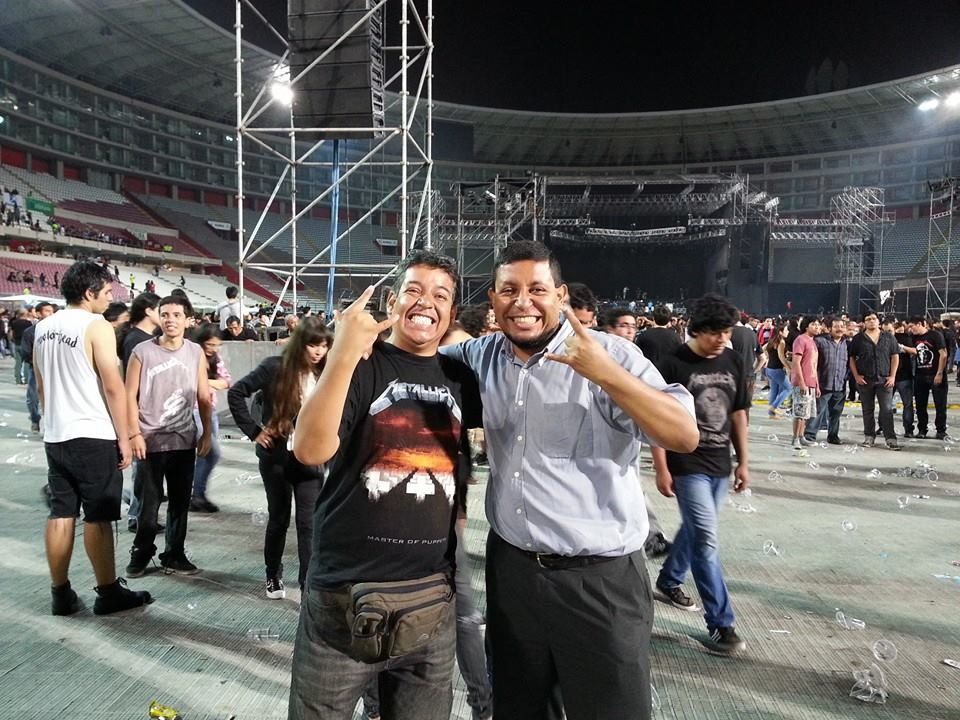
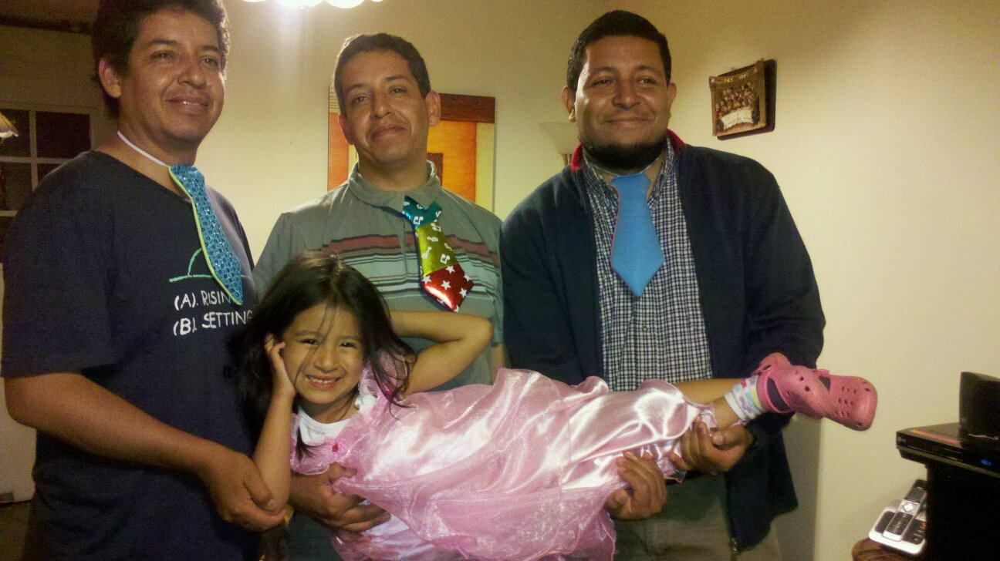
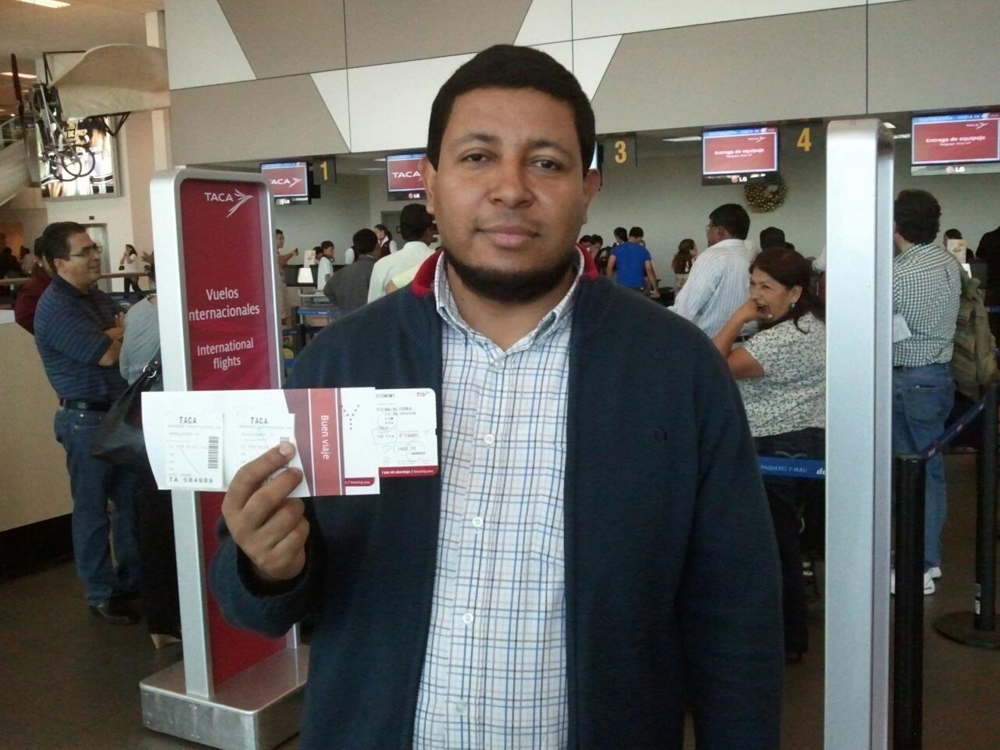
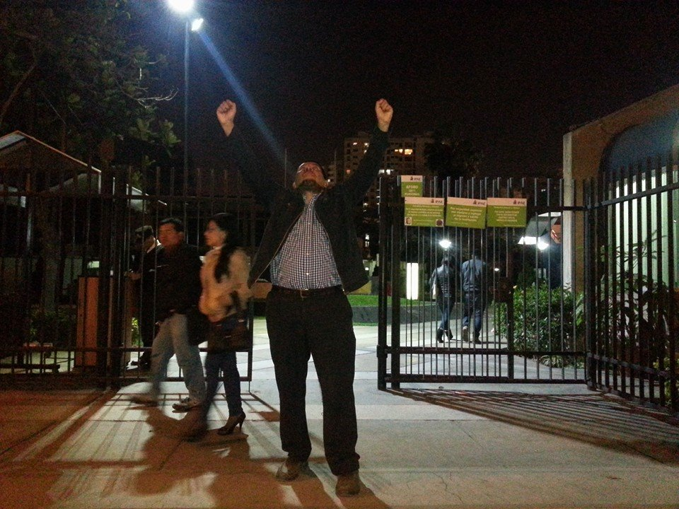
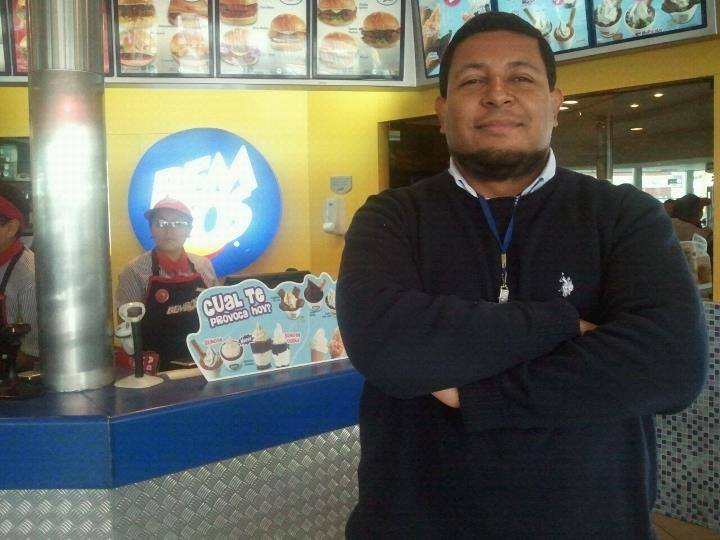
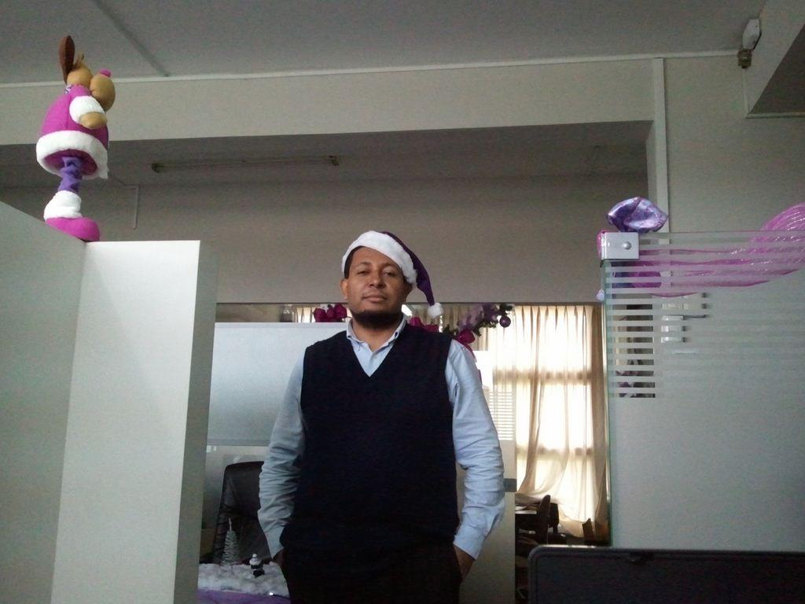
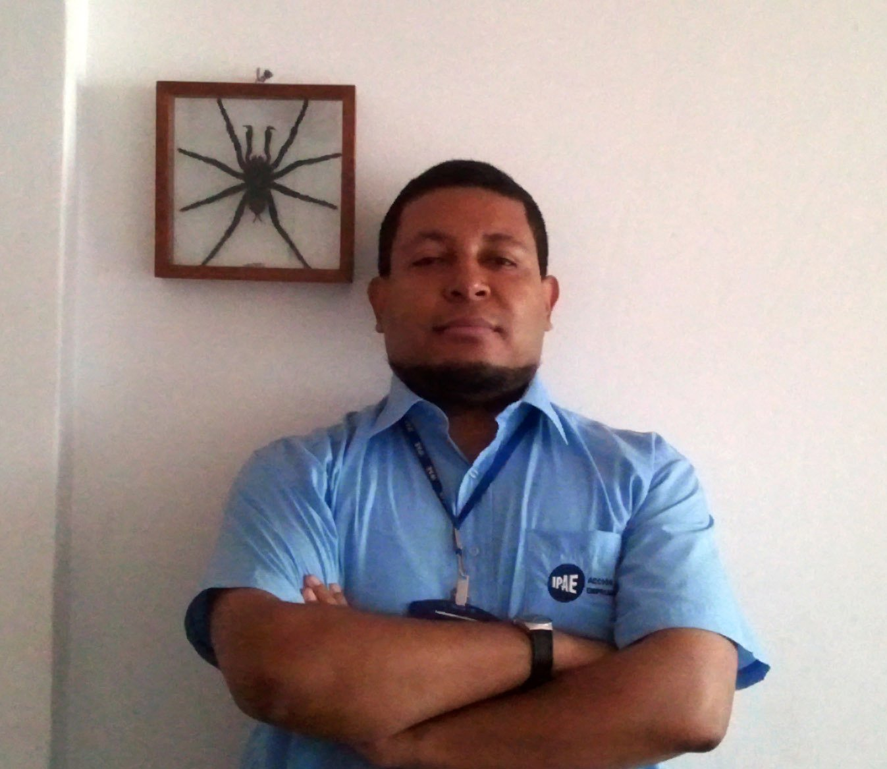

Semblanza
Al cumplirse un mes de tu partida hermano, escribo estas lineas como un pequeño homenaje. Estas lineas son solo una pequeñísima parte de lo que fuiste e hiciste, seria muy difícil resumir toda tu vida, son demasiadas anécdotas y cosas que contar, así que solo mencionare algunas.
Desde pequeño siempre fuiste inquieto y travieso. Y cuando digo “TRAVIESO”, me quedo corto, esa sed de saber e investigar siempre te acompaño, esos proyectos a los que dedicabas cuerpo y alma desde niño, como olvidar cuando a los 10 años decidiste aprender fundición, solo tenias una olla pequeña, unos alambres y la cocina de la casa. Además necesitabas un metal que se pudiera derretir a temperaturas no muy altas. Días después cuando llegue del colegio mis 120 soldaditos de plomo habían sido fundidos y eran una masa circular irreconocible. Me moleste contigo pero entendí una vez mas que tus ansias de saber e investigar no se detenían ante minucias, durante las siguientes semanas los fundiste una y otra vez. Aprendiste a hacer los moldes con arcilla, el vaciado y otras cosas mas. Tu obra cumbre fue una preciosa cruz barroca, luego de eso perdiste el interés por el tema y te embarcaste en tu siguiente proyecto.
Usar mi juego de química, el cual era completamente seguro, pero de alguna manera te las ingeniaste para crear un humo toxico que te mando al hospital. En algún momento tu interés se dirigió a los imanes, nuestro padre tenia 5 grandes radios que eran su orgullo, bueno como todos saben, las radios tienen parlantes y los parlantes tienen imanes, así que supongo que no fue tan sorprendente que tiempo después, padre descubriera que sus radios solo eran carcasa porque habían sido saqueadas, en nombre de la ciencia.
Nuestros padres se cansaron y a tus tiernos 13 años fuiste enviado a un CENECAPE a estudiar electrónica, si eras tan bueno desarmando las cosas al menos deberías poder repararlas. Fuiste feliz un tiempo con tu cautil y tu multitester, así agregaste un nuevo conocimiento a tu colección. Lo siguiente que recuerdo es que decidiste aprender a dibujar, siendo totalmente honesto lo hacías bastante mal, pero eso no te detuvo durante varios meses y gastando cantidades industriales de hojas pusiste todo tu empeño en tu nuevo objetivo y lo lograste, conseguiste dibujar muy bien, tiempo después hasta publicaste 2 números de una revista dedicada al manga y anime, así que también aprendiste a maquetar. Confieso que cuando decidiste aprender a fabricar bombas me asuste un poco, pero creo que tu instinto de conservación funciono en esa ocasión y lo dejaste solo en teoría.
Cuando llegaste a estudiar a la universidad y a IPAE, estabas un poco mas calmado, pero tus proyectos seguían, ahora de una índole diferente, aprender diseño gráfico, construir un muñeco de 4 metros de alto lleno de explosivos para año nuevo,etc. El hecho de estudiar juntos en IPAE me permitió cuidarte y guiarte, como lo debe de hacer cualquier hermano mayor y en la universidad, aunque no lo notaras Abel tomo ese papel, con el fuiste a la marcha de los 4 Suyos y lentamente dejaste de ser ese niño que hacia sus experimentos científicos sin medir las consecuencias y te convertiste en un adulto responsable y consecuente con tus ideas. Pero sin perder tu esencia, sin que tus ansias de conocimiento se vieran mermadas, sin dejar de ser “Alioska”.
Después de terminar tus estudios pasaste por varios trabajos y al final ingresaste a trabajar a IPAE, parece que fue ayer y sin embargo han pasado buena cantidad de años y después fuiste a IPAE en Lima. Cuando venias de visita y teníamos esas largas conversaciones matizadas con mucho rock y ron, jeje. Y bromeábamos sobre el hecho que en el área de sistemas de IPAE eras una anomalía estadística. Todos eran egresados de computación o ingenieros de sistemas y tu eras egresado de ciencias de la comunicación y de administración, supongo que en estos tiempos ser autodidacta es raro.
Y cuando te estabas reinventando de nuevo, con nuevas metas y planes………
Solo me queda decir que te extraño desde hace un mes y te extrañare siempre hermanito, no sabes cuanto.
Galería de Recuerdos






